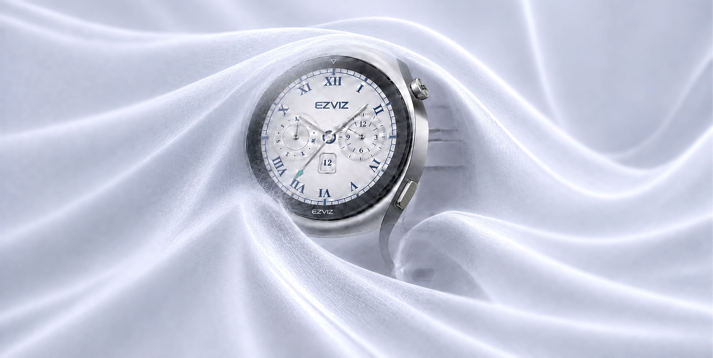
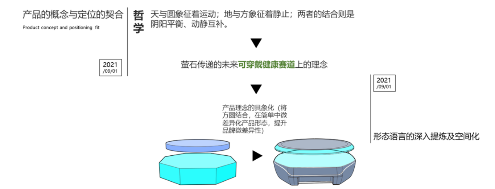

建立造型识别
结合圆形表盘与方形细节，探索品牌自身的产品表达。
01 — INTRODUCTION
专注消费电子与智能硬件设计，从需求梳理、产品造型到 CMF 与量产落地，探索兼具辨识度与真实使用价值的产品体验。
认识我 ↗02 — SELECTED WORK
从穿戴设备到智能硬件
持续探索产品与人的关系。

为运动与健康而设计的腕上伙伴
EZVIZ · 2021—2023
作为萤石首款运动健康手表，从用户需求出发，围绕运动、健康与户外安全建立产品体验，并将「天圆地方」转译为具有辨识度的造型语言。
项目面向关注运动与健康的 30–50 岁用户，以男性为主。作为萤石首款手表，产品需要建立清晰的视觉识别，并在运动健康管理之外，回应独立通话、户外安全与智能家居连接等使用需求。
02 / DESIGN CONCEPT
天与圆象征运动，地与方象征静止；圆与方的结合，表达阴阳平衡、动静互补。将传统哲思提炼为简洁的产品形态，呼应萤石对可穿戴健康赛道的探索。

结合圆形表盘与方形细节，探索品牌自身的产品表达。
重新设计表带与表体锁扣，跳出传统枪栓式结构。
优化表盘刻度图形，让精细视觉与稳定量产相互平衡。
结合心电测量的使用方式，采用易于触达操作的方形按键。
04 / MATERIAL & COLOR
316L 不锈钢表壳与氟橡胶表带，兼顾精致观感与运动佩戴需求。
05 / RECOGNITION
项目完成量产上市，并获得 2023 年美国 IDEA 设计奖。
更多设计草图、结构与 CMF 过程、实物及获奖资料正在整理中。
03 — ABOUT ME
我是叶凌霄，工业设计师。拥有消费电子与智能硬件设计经验，擅长将用户需求、产品形态与工程实现串联起来，推动设计走向量产。
杭州萤石网络股份有限公司
工业设计 · 项目主导
教育及完整工作履历待补充
产品策略与需求梳理
产品造型与体验
CMF 设计与工程协同
设计落地与量产跟进